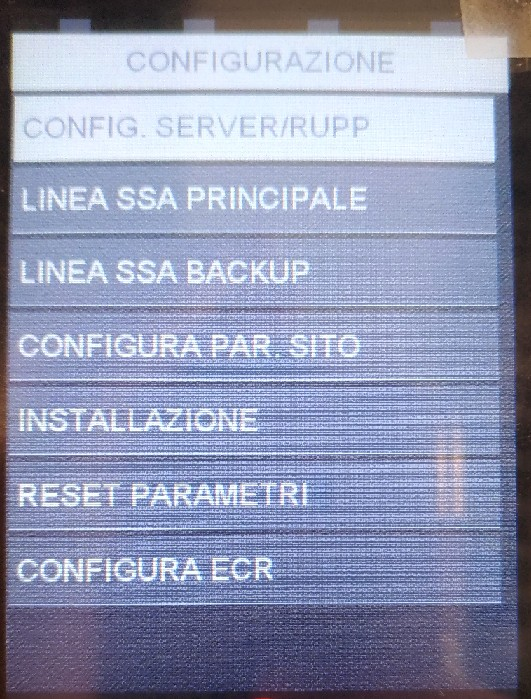
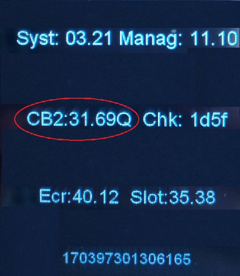

Manuale Installatore
Ingenico Move/2500
Stato
Utilizzato da
Redatto da RCC
Approvato da D.
VERSIONING
DATA
REVIS
IONE
MODIFICHE APPORTATE
AUTORE
22/08/17
1
Stesura iniziale
Salvaterra
Indice generale
- Scopo e campo di applicazione...........................................................................................3
- Accensione e Riavvio.........................................................................................................4
2.1. Accensione..............................................................................................................................4
2.2. Riavvio...................................................................................................................................5
3. Attivazione bancaria..........................................................................................................5
3.1. Parte Pos: configurazione SSA manager....................................................................................5
3.2. Attivazione manuale................................................................................................................7
4. Reset Pos.........................................................................................................................8
4.1. Reset totale............................................................................................................................8
4.2. Reset bancario........................................................................................................................8
5. Release CB2 e Release Applicazioni....................................................................................9
5.1. Release CB2............................................................................................................................9
1. Scopo e campo di applicazione
Questo documento descrive le modalità di utilizzo e configurazione del pos Move2500.
2. Accensione e Riavvio
2.1.
Accensione
Accensione : collegare l'alimentatore del pos. Il pos si troverà nella schermata di idle dopo
circa 90 secondi.
2.2.
Riavvio
Riavvio: premere contemporaneamente il tasto giallo e il tasto punto.
3. Attivazione bancaria.
3.1.
Parte Pos: configurazione SSA manager

Per accedere al menù SSA manager e procedere con la
configurazione per l’attivazione:
- premere tasto Grigio (sopra il tasto rosso)
- selezionare SSA MANAGER
- selezionare CONFIGURAZIONE – psw 2010.
Nel menù configurazione si trovano 7 voci, queste
verranno descritte dettagliatamente nei punti 3-11
dell’elenco sottostante;
4. selezionare Config server rupp:
• Slot → selezionare lo slot interessato: Argentea;
• Merchant server: ARG-!-NTSV.AMON Premere tasto verde per confermare;
- RUPP: inserire il rupp assegnato, per la lettera iniziale utilizzare la tastiera visualizzata a
- video, per i valori numerici utilizzare la tastiera numerica del pos. Premere tasto verde
- per continuare.
- Quando il pos ritorna in slot, premere tasto rosso, dopo di che, verrà richiesto se si
- desidera salvare le modifiche, premere tasto verde per confermare.
5. Selezionare SSA Principale:
- selezionare Tipo Linea: scegliere GPRS e confermare con tasto verde;
- selezionare Tipo Protocollo: scegliere tra TCP/IP. Confermare con tasto verde;
- inserire indirizzo IP: 208.224.253.5 i valori vanno inseriti dal tastierino del pos.
- Confermare con tasto verde;
- inserire Porta: 41140 i valori vanno inseriti dal tastierino del pos. Confermare con tasto
- verde;
- inserire Timeout socket: Confermare con tasto verde;
- inserire Timeout Ricezione: Confermare con tasto verde;
- il pos ritornerà in tipo linea, premere tasto rosso, dopo di che verrà richiesto se si
- vogliono salvare le modifiche. Confermare con tasto verde.
6. selezionare SSA backup:
- selezionare Tipo Linea: scegliere GPRS. Confermare con tasto verde;
- selezionare Tipo Protocollo: scegliere tra TCP/IP. Confermare con tasto verde;
- inserire indirizzo IP: 208.224.253.5 i valori vanno inseriti dal tastierino del pos.
- Confermare con tasto verde;
- inserire Porta: 41140 i valori vanno inseriti dal tastierino del pos. Confermare con tasto
- verde;
- inserire Timeout socket: Confermare con tasto verde;
- inserire Timeout Ricezione: Confermare con tasto verde;
- il pos ritornerà in tipo linea, premere tasto rosso, dopo di che verrà richiesto se si
- vogliono salvare le modifiche. Confermare con tasto verde.
7. selezionare config. Par sito
• inserire APN: m2m.tns.prod1
• verrà mostrato a display IP DINAMICO con scelte SI’ o NO.
Selezionare SI e confermare con tasto verde, premete poi tasto rosso
8. una volta completata la configurazione di config. Par sito viene richiesto
automaticamente se si vuole eseguire l’attivazione. Premere tasto verde per confermare
l’attivazione bancaria. Durante questa procedura vengono scaricati sul pos il/i termid
prediposti ad essere caricati sul pos. Tasto rosso se si vuole annullare l’operazione.
3.2.
Attivazione manuale
Per far partire il primo DLL:
1. premere Tasto Grigio
2. selezionare SSA MANAGER – CONFIGURAZIONE (2010)
3. selezionare INSTALLAZIONE e confermare con tasto verde (premere le frecce in basso
a destra sul pos per scorrere le varie opzioni della tabella)
4. Reset Pos
4.1.
Reset totale
Sul pos move/2500 è possibile resettare i termid e i parametri di configurazione dell’ssa oppure
solamente i termid.
Per resettare completamente il pos:
- premere TASTO GRIGIO
- selezionare SSA MANAGER – CONFIGURAZIONE (2010)
- selezionare RESET PARAMETRI
• a display verrà richiesto di eseguire il reset completo: se si seleziona OK-tasto verde
verrà eseguita una cancellazione completa, cioè verranno eliminati sia i termid
presenti a bordo sul pos che i parametri di configurazione dell’ssa manager.
Per riconfigurare e attivare il pos vedere capitolo 3.
4.2.
Reset bancario
Per resettare solamente i termid e non i parametri di configurazione:
- premere TASTO GRIGIO
- selezionare SSA MANAGER – CONFIGURAZIONE (2010)
- selezionare RESET PARAMETRI
• Se alla richiesta di cancellazione parametri completa si preme tasto rosso il pos chiederà
di eseguire la cancellazione bancaria. A questo punto premendo tasto verde viene
eseguita un reset parziale e cioè verranno eliminati solamente i termid presenti sul
pos, mentre verranno lasciati invariati i parametri di configurazione.
Per rifare l'attivazione vedere i paragrafi 3.3 e 3.4.
5. Release CB2
5.1.
Release CB2

Per visualizzare la release CB2:
- premere tasto F1;
- selezionare SERVIZIO;
- selezionare RELEASE SW: la seconda linea mostra la
release CB2 che è caricata a bordo del pos.